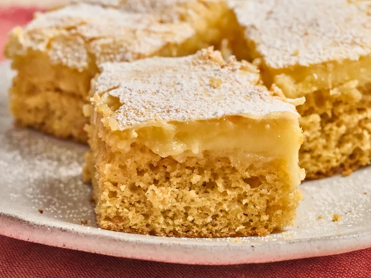

Sweet Potato Butter Cake
This sweet potato ooey gooey butter cake transforms a simple boxed cake mix into a rich, flavorful dessert with the addition of canned sweet potatoes and a cream cheese topping.
Ingredients
- baking spray
- 1 (15-ounce) can cut sweet potatoes in syrup, drained
- 1 (13.25-ounce) package butter yellow cake mix
- 4 large eggs, divided
- 1/2 cup butter, melted
- 1 1/2 teaspoons vanilla extract, divided
- 1 teaspoon cinnamon
- 3 1/2 cups powdered sugar
- 8 ounces cream cheese
Directions
- Preheat the oven to 350 degrees F (180 degrees C). Line a 9x13 baking pan with parchment paper and allow excess paper to hang slightly over the edges for easy removal after baking. Spray parchment with baking spray.
- Place sweet potatoes in a large mixing bowl and beat with an electric mixer until mostly smooth. Add cake mix, 2 eggs, butter, 1 teaspoon vanilla extract, and cinnamon to the bowl and mix well. Add cake batter to the prepared pan and spread evenly.
- Combine powdered sugar, cream cheese, remaining 2 eggs, and remaining vanilla extract in a separate bowl; mix well and pour over the top of the cake batter.
- Bake cake in preheated oven until set around the edges and just beginning to pull away from the sides, and slightly jiggly in the center, 30 to 35 minutes.
- Let cake cool completely in the pan to allow layers to settle before cutting into squares.
Back to Recipes